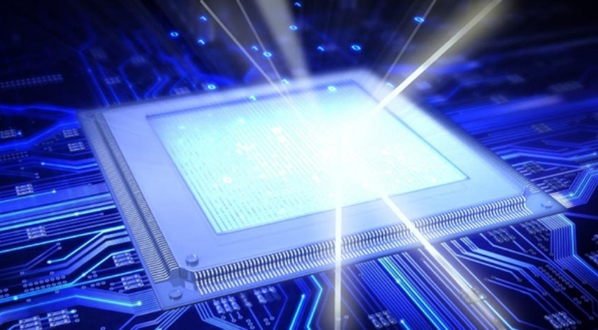

Оптические компьютеры
-
В Сарове разработали и запатентовали оптический суперкомпьютер
В Российском федеральном ядерном центре — Всероссийском научно-исследовательском институте экспериментальной физики (предприятие госкорпорации «Росатом» РФЯЦ-ВНИИЭФ в нижегородском Сарове) разработали и запатентовали оптический суперкомпьютер, сообщает РИА «Новости».
В центре разработали так называемую фотонную вычислительную машину (ФВМ), в которой вычислительные процессы осуществляются с помощью взаимодействия импульсов лазерного излучения, а не на работе электронных компонентов, как в обычных компьютерах. Автор разработки, главный научный сотрудник Института теоретической и математической физики
(ИТМФ) ВНИИЭФ Сергей Степаненко, отметил, что ФВМ необходимы для решения задач, с которыми не могут справиться обычные суперкомпьютеры. Он подчеркнул, что фотонные технологии позволят в десятки или сотни тыс. раз уменьшить потребление энергии.